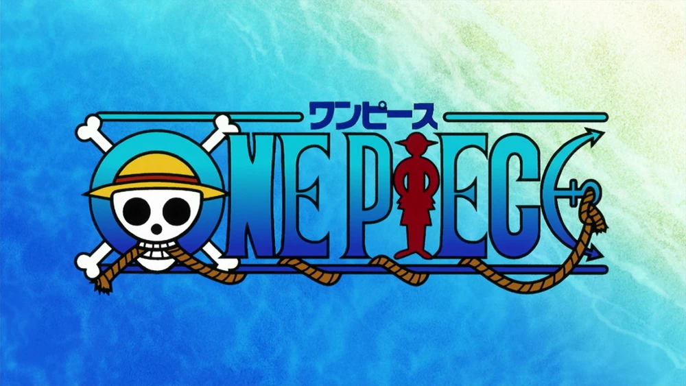

EXTA karakters en meer
karakters
link naar extra karakters

link naar trailer one piece anime (unoffical fan made trailer)
link naar unofficial one piece SHOP in japan
map van unoffical one piece store locatie shibuya main store
Ikebura store
umeda store